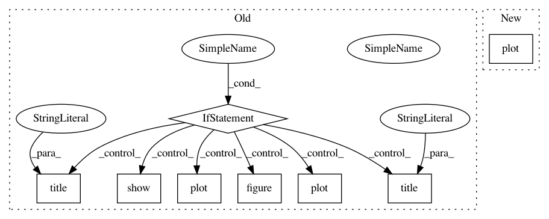

928949266422c99f99fdf70448800cef4a1bfb8e,PyMC2/tests/test_joint.py,test_Joint,check,#test_Joint#,9
Before Change
def check(self):
M = Sampler(model_for_joint)
M.sample(iter=30000,burn=0,thin=100)
if PLOT:
plot(M.A.trace.gettrace()[:,0],M.B.trace.gettrace()[:,0],"b.")
title("First elements")
xlabel("A")
ylabel("B")
figure()
plot(M.A.trace.gettrace()[:,1],M.B.trace.gettrace()[:,1],"b.")
title("Second elements")
xlabel("A")
ylabel("B")
figure()
plot(M.A.trace.gettrace()[:,0])
figure()
plot(M.A.trace.gettrace()[:,1])
show()
if __name__ == "__main__":
NumpyTest().run()
After Change
def check(self):
M = Sampler(model_for_joint)
M.sample(iter=30000,burn=0,thin=100)
M.plot()
if __name__ == "__main__":
NumpyTest().run()
In pattern: SUPERPATTERN
Frequency: 3
Non-data size: 8
Instances
Project Name: pymc-devs/pymc3
Commit Name: 928949266422c99f99fdf70448800cef4a1bfb8e
Time: 2007-07-01
Author: fonnesbeck@15d7aa0b-6f1a-0410-991a-d59f85d14984
File Name: PyMC2/tests/test_joint.py
Class Name: test_Joint
Method Name: check
Project Name: pymc-devs/pymc3
Commit Name: 928949266422c99f99fdf70448800cef4a1bfb8e
Time: 2007-07-01
Author: fonnesbeck@15d7aa0b-6f1a-0410-991a-d59f85d14984
File Name: PyMC2/tests/test_trans_d.py
Class Name: test_Sampler
Method Name: check
Project Name: pymc-devs/pymc3
Commit Name: 0194ba63e765b03d8ab7a86669bc454b0e9161c2
Time: 2007-06-22
Author: fonnesbeck@15d7aa0b-6f1a-0410-991a-d59f85d14984
File Name: PyMC2/tests/test_Sampler.py
Class Name: test_Sampler
Method Name: check